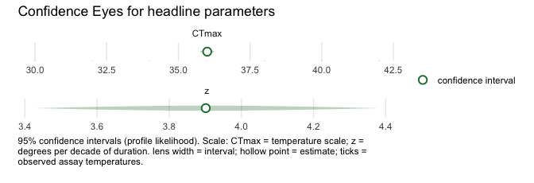
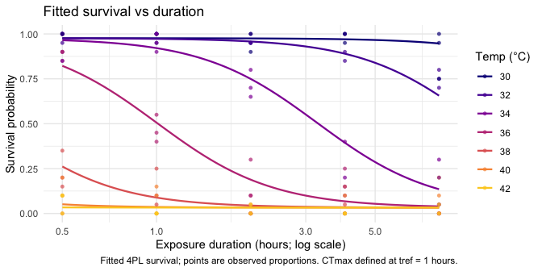
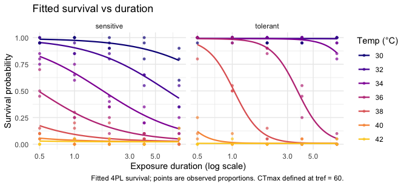

Fast, prior-free frequentist confidence intervals — Wald, profile-likelihood, and bootstrap — for thermal-load-sensitivity (thermal death-time) models; the maximum-likelihood complement to
bayesTLS.
⚠️
freqTLSis experimental and provided without assurance. Use at your own risk. Results and APIs may be incorrect or change. You are responsible for checking your data, design, model specification, convergence, identifiability, diagnostics, and interpretation. Important analyses should be independently refitted and cross-checked with the Bayesian sister packagebayesTLS(source repository). Agreement is a cross-check, not proof of correctness: shared data or model errors can make both packages agree.
freqTLS fits the single-stage four-parameter logistic (4PL) thermal death-time model by maximum likelihood via TMB, parameterised directly in CTmax (the critical thermal maximum at the reference time tref) and z (thermal sensitivity, in degrees Celsius per order-of-magnitude change in exposure duration). It then returns prior-free frequentist confidence intervals — Wald, profile-likelihood (asymmetry-respecting), and bootstrap — for binomial and beta-binomial survival counts, and for continuous proportion responses in (0, 1) via the beta family.
Its signature display is the Confidence Eye: a pale horizontal lens spanning the selected confidence interval, with a hollow point estimate. The profile- likelihood interval is the default where it is supported; Wald and bootstrap intervals can also be shown. These are likelihood-based confidence intervals, not posterior distributions, so the visual deliberately avoids posterior-density iconography.

What freqTLS does
- Fits the 4PL thermal death-time model by maximum likelihood, directly in
CTmaxandz, for binomial and beta-binomial survival counts and continuous beta proportions in(0, 1)(no trials column needed). - Inverts the likelihood-ratio test to give profile-likelihood confidence intervals that respect asymmetry and carry no prior.
- Surfaces identifiability honestly: when a profile does not close, it is flagged, never fabricated. By default
confint()then falls back to a prior-free parametric bootstrap; unstable refits remain unavailable rather than producing a fabricated bound. Setfallback = FALSEto keep the open profile, which the Confidence Eye marks with a hollow point and no lens. - Ships a tidy column interface (
fit_tls()) and abrms/drmTMB-style formula interface (tls_bf()) with fixed-effect predictors on any sub-parameter (CTmax,log_z,low,up,log_k), plus prediction, lethal-time derivation, and plotting (survival curves, the survival surface, and the Confidence Eye). - Fits random intercepts on
CTmax,log_z,low, andlog_k(<param> ~ <fixed> + (1 | group)), with profile intervals for the fixed effects. At most one intercept term is supported per coordinate, and multiple terms remain independent variance blocks; correlated, crossed, nested, and random-slope structures are not implemented. - Derives critical temperatures —
derive_ctmax()(absolute threshold) andderive_tcrit()(rate-multiplier) — and predicts heat injury under a temperature trace (predict_heat_injury()) with a prior-free bootstrap confidence band (heat_injury_envelope(),plot_heat_injury()). Seevignette("frequentist-and-bayesian")for how the likelihood and Bayesian paths compare.
Why not the two-stage workflow
The classical workflow fits a curve per temperature, then regresses the derived endpoints in a second stage. That discards the joint uncertainty: the second-stage standard errors treat noisy first-stage estimates as fixed, and the design’s identifiability is invisible. freqTLS fits one model to all the counts at once and inverts the likelihood for CTmax and z directly, so the interval reflects the whole design and flags weakly identified parameters.
How it differs from bayesTLS
freqTLS follows the empirical workflow in the bayesTLS supplement while using a different inference engine. A numerical comparison is meaningful only after the data, response family, formulas, asymptote bounds, threshold, reference time, estimand, and grouping structure have been matched. Under a matched 4PL specification, the packages can represent the same fitted curve; their APIs and uncertainty objects are not drop-in replacements.
bayesTLS |
freqTLS |
|
|---|---|---|
| Inference | Bayesian posterior (MCMC / Stan) | Maximum likelihood + profile likelihood |
| Intervals | Credible intervals (prior-informed) | Confidence intervals (prior-free) |
| Needs Stan / MCMC | Yes | No |
| Speed | Sampling (seconds to minutes) | Optimisation (~ms to ~1 s; see the timing table in vignette("comparing-to-bayesTLS")) |
| Weak identification | Priors can still yield a finite posterior interval | Open profiles are flagged; bootstrap fallback can also be unstable |
| Extras | Posterior propagation, fitted Bayesian heat-injury/repair workflows, priors | Explicit non-closing/identifiability flags, Confidence Eyes, profile/Wald/bootstrap intervals |
Use freqTLS when you want fast, prior-free, asymmetry-respecting intervals and an explicit identifiability check. When a profile does not close it can fall back to a parametric bootstrap; if too few stable refits remain, the result stays unavailable rather than reporting a fabricated bound. Use bayesTLS when you want a full Bayesian workflow, prior information, or the heat-injury and repair sub-models. The two are complementary approaches to the same thermal-load-sensitivity framework, not competitors.
Installation
freqTLS 0.1.0 is an experimental release candidate and has not been submitted to CRAN. Install it from GitHub:
# install.packages("pak")
pak::pak("itchyshin/freqTLS")Quick start
The workflow follows the same standardize → fit → quantities → plot sequence as bayesTLS, but the packages are not drop-in replacements. freqTLS implements the tested fixed/grouped designs and limited random-intercept structures described below; more general Bayesian models remain in bayesTLS. The engine is maximum likelihood (no Stan, no MCMC, no internet); uncertainty is a frequentist trio (Wald, profile, bootstrap) instead of a posterior. The deliberate differences are documented in vignette("comparing-to-bayesTLS"): the absolute (p-survival) threshold and non-default asymptote bounds are not yet wired through the ML backbone (fit on the relative midpoint, then convert with extract_tdt()); uncertainty comes as bootstrap replicates rather than posterior draws; and the temperature effect defaults to the constant-shape configuration.
library(freqTLS)
# 1. Standardize raw survival counts (the shared bayesTLS entry point)
dat <- simulate_tls(family = "beta_binomial", CTmax = 36, z = 4, phi = 50, seed = 1)
std <- standardize_data(dat, temp = "temp", duration = "duration",
n_total = "total", n_surv = "survived",
duration_unit = "hours")
# 2. Fit the 4PL by maximum likelihood, directly in CTmax and z.
# `standardize_data()` converts durations to minutes. The omitted t_ref is 60
# minutes (one hour); `t_ref = 1` means one minute.
fit <- fit_4pl(std)
# 3. Headline thermal-death-time quantities with profile-likelihood intervals
tls(fit)
#> <tls> relative threshold; quantities: z, CTmax (profile intervals)
#> # A tibble: 2 × 4
#> quantity median lower upper
#> <chr> <dbl> <dbl> <dbl>
#> 1 CTmax 29.1 28.3 29.8
#> 2 z 3.90 3.43 4.38For per-group CTmax and z, standardize a dataset that contains the grouping column, then pass matching formulas exactly as in bayesTLS:
grouped_dat <- simulate_tls(
family = "binomial", group = c("cool", "warm"), reps = 4, n = 40,
CTmax = c(35, 38), z = c(4, 4), seed = 2
)
grouped_std <- standardize_data(
grouped_dat, temp = "temp", duration = "duration",
n_total = "total", n_surv = "survived"
)
grouped_fit <- fit_4pl(
grouped_std, ctmax = ~ 0 + group, z = ~ 0 + group, t_ref = 60
)
# Inspect the recovered group-specific CTmax and z estimates.
tidy_parameters(grouped_fit)[
grepl("^(CTmax|z):", tidy_parameters(grouped_fit)$parameter),
c("parameter", "estimate")
]extract_tdt(), predict_survival_curves(), and diagnose_tdt_fit() complete the shared-name analogue surface; the column / formula engine interface (fit_tls(), tls_bf()) remains available underneath.
# 4. Plot the fitted survival surface (the Confidence Eye is shown above)
plot_survival_curves(fit)
Formula interface
If you prefer a grammar, build the model with tls_bf() and pass it as the first argument with the data in data =. The left-hand side names the survival counts (successes | trials(total)); the right-hand side tags the two axes with the time() and temp() markers. The formula path feeds the same likelihood engine, so the fits are numerically identical:
# Column form and formula form fit the same model:
fit_f <- fit_tls(
tls_bf(survived | trials(total) ~ time(duration) + temp(temp)),
data = dat,
family = "beta_binomial",
tref = 60
)
all.equal(coef(fit_f), coef(fit))
#> [1] TRUEAdd a sub-parameter formula for predictors on CTmax and log_z (for example CTmax ~ population, log_z ~ population for a grouped fit). These two headline coordinates must use the same fixed-effect design columns; their supported random-intercept groupings may differ. The shape coordinates may use independent fixed designs.
Random effects on CTmax and z
When thermal tolerance varies across colonies, clutches, or populations, add a random intercept on CTmax with CTmax ~ 1 + (1 | group). freqTLS fits it by maximum likelihood through TMB’s Laplace approximation (matching the bayesTLS random-effects-on-the-midpoint configuration), reports the between-group standard deviation as sigma_CTmax, and returns the group BLUPs via ranef(). The no-random-effects path stays byte-identical to the fixed-effects model.
# 15 colonies whose CTmax varies with SD = 1.5 C.
dre <- simulate_tls(family = "binomial", CTmax = 36, z = 4,
re_sd = 1.5, n_re_groups = 15, seed = 1)
fit_re <- fit_tls(
tls_bf(survived | trials(total) ~ time(duration) + temp(temp),
CTmax ~ 1 + (1 | colony)),
data = dre, family = "binomial", tref = 60
)
# Between-colony SD of CTmax (with a Wald interval):
tp <- tidy_parameters(fit_re)
tp[tp$parameter == "sigma_CTmax", c("parameter", "estimate", "conf.low", "conf.high")]
#> # A tibble: 1 × 4
#> parameter estimate conf.low conf.high
#> <chr> <dbl> <dbl> <dbl>
#> 1 sigma_CTmax 1.48 1.03 2.12
# Colony BLUPs (deviations from the population CTmax):
head(ranef(fit_re), 3)
#> # A tibble: 3 × 4
#> group term estimate std.error
#> <chr> <chr> <dbl> <dbl>
#> 1 g1 CTmax -1.03 0.390
#> 2 g10 CTmax -0.651 0.390
#> 3 g11 CTmax 2.05 0.390
# Choose the prediction target explicitly for a random-intercept fit.
colony_1 <- as.character(ranef(fit_re)$group[1])
new_re <- data.frame(temp = 36, duration = 2, colony = colony_1)
data.frame(
target = c("population", "colony"),
survival = c(
predict(fit_re, new_re, re.form = "population"),
predict(fit_re, new_re, re.form = "conditional")
)
)
#> target survival
#> 1 population 0.22405371
#> 2 colony 0.08768286Population predictions set every random intercept to zero. Conditional predictions add the fitted BLUP and therefore require each relevant grouping column in newdata; unseen groups stop with guidance to use the population prediction. Calling predict() without re.form on a random-effects fit warns and returns the population prediction.
A random intercept on thermal sensitivity works the same way, with log_z ~ 1 + (1 | group). Because z is modelled on the log scale, the deviation is Gaussian on log(z) and sigma_logz is a standard deviation on log(z) — read exp(sigma_logz) as the approximate multiplicative spread of z across groups, not a z-scale SD. The two intercepts can be combined; with the same grouping factor freqTLS fits two independent variances (no correlation term) and warns, since group-level CTmax and z deviations are usually correlated — reach for bayesTLS when you need a correlated random effect. Like sigma_CTmax, sigma_logz is a maximum-likelihood variance component, biased low with few groups.
Population differences in curve shape
Two populations can differ not only in where the thermal-death curve sits (CTmax, z) but in its shape — how steeply survival collapses with exposure (k), or the background and maximum survival (low, up). The formula interface lets low, up, and log_k vary by a grouping factor, relaxing the shared-shape restriction. Here a heat-tolerant and a heat-sensitive population differ in both CTmax and the curve steepness k:
# The tolerant population has a higher CTmax and a steeper survival collapse.
dpop <- simulate_tls(family = "binomial", group = c("tolerant", "sensitive"),
CTmax = c(38, 35), z = c(3.5, 3.5),
low = 0.02, up = 0.98, k = c(8, 3), seed = 11)
fit_pop <- fit_tls(
tls_bf(survived | trials(total) ~ time(duration) + temp(temp),
CTmax ~ group, log_z ~ group,
low ~ group, up ~ group, log_k ~ group),
data = dpop, family = "binomial", tref = 60
)
# Per-group steepness k with profile-likelihood confidence intervals:
confint(fit_pop, parm = c("k:tolerant", "k:sensitive"), method = "profile")
#> # A tibble: 2 × 8
#> parameter conf.low conf.high estimate level method scale conf.status
#> <chr> <dbl> <dbl> <dbl> <dbl> <chr> <chr> <chr>
#> 1 k:tolerant 7.43 10.6 8.86 0.95 profile log ok
#> 2 k:sensitive 2.40 3.48 2.90 0.95 profile log okThe two steepness estimates have non-overlapping confidence intervals, so the shape difference is identified by the data, not assumed. The fitted curves show it directly — survival collapses abruptly in the tolerant population and gradually in the sensitive one:
plot_survival_curves(fit_pop)
The model
For exposure duration d (with logd = log10(d)) and assay temperature T, survival follows the descending four-parameter logistic
CTmax is the critical thermal maximum at the reference time tref, and z is the thermal sensitivity (degrees Celsius per order-of-magnitude change in exposure duration). The In the default constant-shape configuration, the temperature effect runs through the midpoint only (shared low, up, k). Explicit formula terms can instead model low, up, or log_k; these extensions change the interpretation of an absolute-threshold curve and do not create local z estimates. Because CTmax and z are direct model parameters, both can be profiled directly.
See vignette("freqTLS") for the full walkthrough, vignette("model-math") for the exact bridge to bayesTLS, and vignette("profile-likelihood") for what the profile is doing and the honest non-closing fallback.
Credit and origins
The thermal-load-sensitivity modelling framework implemented here was introduced by Daniel W. A. Noble, Pieter A. Arnold, Shinichi Nakagawa, and Patrice Pottier in the bayesTLS package. The model and the mapping from the 4PL midpoint slope to z and CTmax are theirs. freqTLS is a likelihood implementation of that framework. Please cite their paper — Noble et al. (2026, bioRxiv, doi:10.64898/2026.07.16.738378) — when you use freqTLS; run citation("freqTLS") for all entries. freqTLS contributes a TMB maximum-likelihood likelihood, the direct CTmax/z reparameterisation that makes both quantities directly profile-able, and profile-likelihood confidence intervals — a likelihood complement to the Bayesian path (no priors, no MCMC, no Stan).
Data credits
The active teaching cases use zebrafish_o2 (oxygen-gradient zebrafish), aphid_tdt (cereal aphids), snowgum_psii (Snow-gum PSII), and dsuzukii (mortality and awake/coma endpoints). Their original sources and component licences are recorded in inst/CITATION, inst/COPYRIGHTS, and the repository licence ledger. Snow-gum remains CC BY-NC 4.0 in this development version; do not assume the package’s GPL licence removes that restriction.
shrimp_lethal, shrimp_sublethal, and zebrafish_lethal are retained only as unpublished compatibility/benchmark fixtures. They are not current teaching examples and must not be used as substitutes for the canonical cases. Please cite bayesTLS and each original data source when using any bundled data.